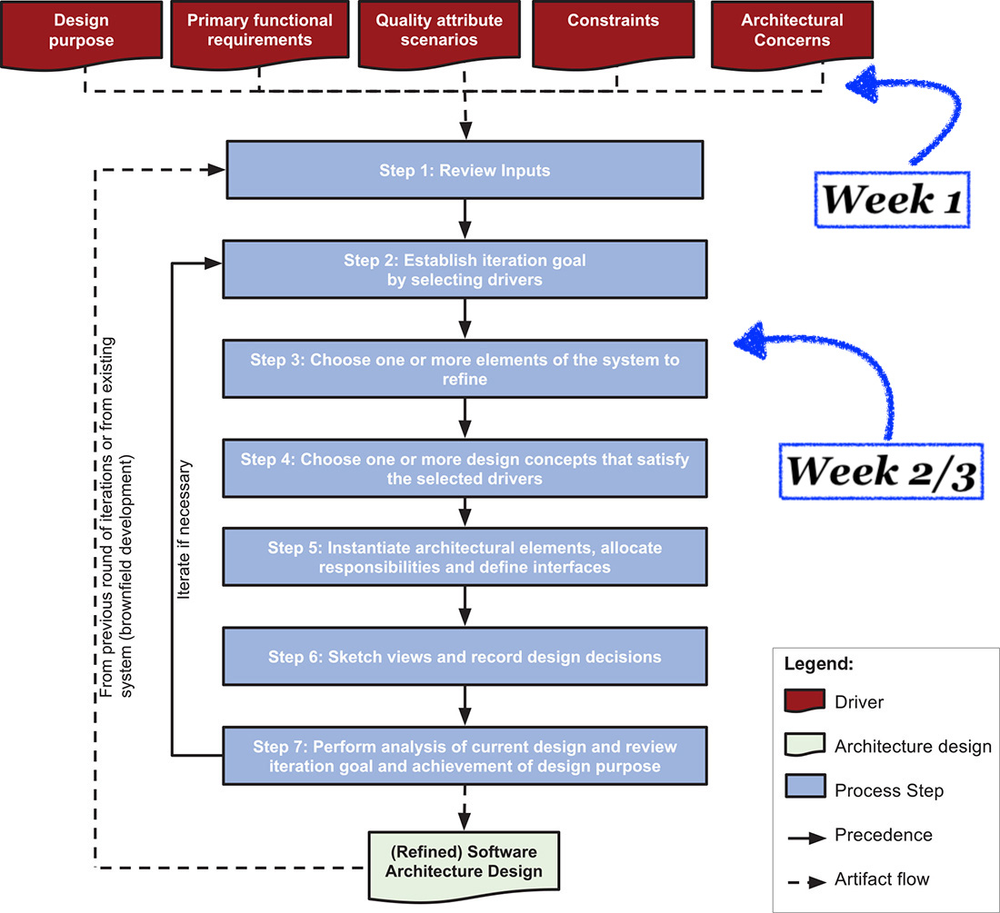

Iedere student krijgt één inzending van een andere groep. Dus per groep krijg je de inzendingen van 3 andere groepen te zien.
Bekijk eerst de drie inzendingen, vergelijk ze met elkaar en geef feedback.
Je hoeft niet te beoordelen, het doel is om elkaar te helpen.
(zie PDF van PPT op Canvas)

Bepaal welke use cases significant zijn.
De drivers zijn de kwaliteitsattributen en constraints die van belang zijn voor de significante use cases (uit stap 1) die je in deze iteratie uitwerkt.
Eerste iteratie: gehele systeem.
Geef ook een reden waarom je voor andere mogelijke design concepten niet hebt gekozen. Relevante designkeuzes voor databasetechniek: Reference architectures for Data Analytics.
Eerste iteratie: nog niet relevant.
Bepaal in de komende dagen welke architectuur je wil gebruiken voor de practicum-opdracht. Bestudeer de architecturen uit Reference architectures for Data Analytics plus natuurlijk de standaard relationele architecturen.
Bekijk ook of je de Kappa architectuur misschien geschikt vindt.
Documenteer:
Maandag 18 februari doen we gezamenlijk iteratie #2: de keuze van de juiste technologie bij de architectuur die jullie voorstellen. Ook bespreken we dan: textanalyse methoden.